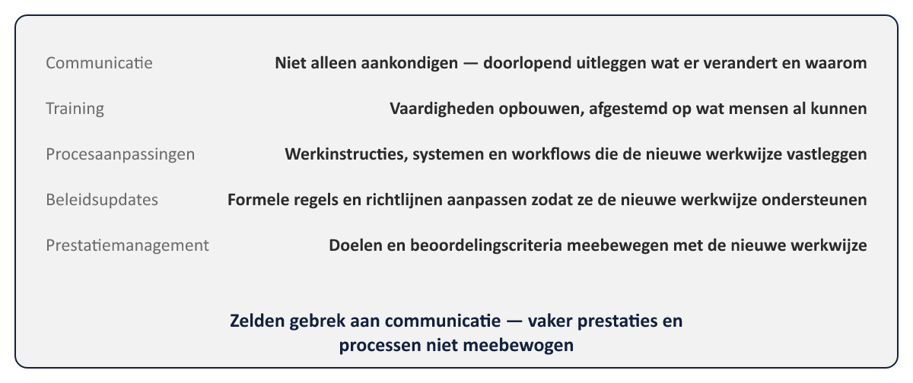
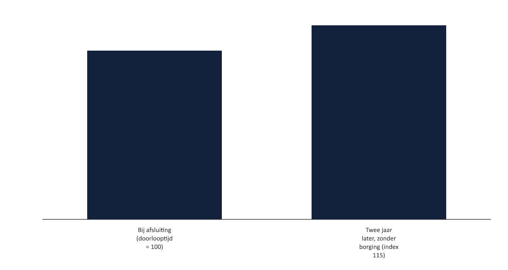

Sheet 1Titel
Project- en Programmamanagement
Niveau 2 · Deel 21: Overdracht, adoptie, borging
Sheet 2Van meten naar borgen
Deel 12: baten in kaart brengen en plannen
Dit deel: baten laten beklijven, ook na afsluiting
Sheet 3Embed the Outcomes: vier activiteiten
1. Voorbereiden op transitie
2. Implementeren
3. Borgen
4. Evalueren of de outcome is bereikt
Sheet 4Niet levering, maar adoptie
Deliver the Capabilities: outputs opleveren
Embed the Outcomes: de vertaalslag daarna — domein van de BCM
Sheet 5Verandertempo en stabiliteit
Dezelfde balans als absorptievermogen (deel 15)
Nu toegepast op het moment van transitie zelf
Sheet 6De adoptiegereedschapskist

Communicatie · Training · Procesaanpassingen
Beleidsupdates · Prestatiemanagement
Sheet 7Adoptie mislukt zelden door communicatie
Vaker: prestatiemanagement en processen niet meebewogen
Mensen afgerekend op de oude manier, verwacht op de nieuwe
Sheet 8Batenrealisatie actief bewaken
Volgen tegen de benefit profiles (deel 12)
Bedreigingen vroeg escaleren — net als issues (niveau 1)
Sheet 9Overdracht bij Closing the Programme
Verantwoordelijkheid voor batenrealisatie → staande organisatie
Meerdere baten, meerdere eigenaren, allemaal expliciet benoemd
Sheet 10Batenerosie: het stille risico

Oude gewoontes · verschuivende prioriteiten · geen eigenaar meer
Sheet 11Batenerosie voorkomen
Structureel, niet hopen: ingeplande post-programma reviews
Expliciete eigenaar in de lijn · blijvende KPI’s
Sheet 12Toegepast: Programma Mutatieplatform
Hoofd Klantcontact: formeel eigenaar van de doorlooptijd-KPI
Kwartaalmeting, ook jaren na afsluiting
Sheet 13Vooruitblik
Deel 22: examentraining + capstone — het Mutatieplatform verdedigd voor de sponsoring group